←
AX
·
Sala en vivo
Show Business Solutions
Hands on everything
En vivo
Informe
Salir

Centro de Control
Sala en vivo
Email
Contraseña
Ingresar
Los
shows del Movistar Arena
Elegí un show para ver la sala en vivo.
Cargando…
El
plano
M
é
tricas